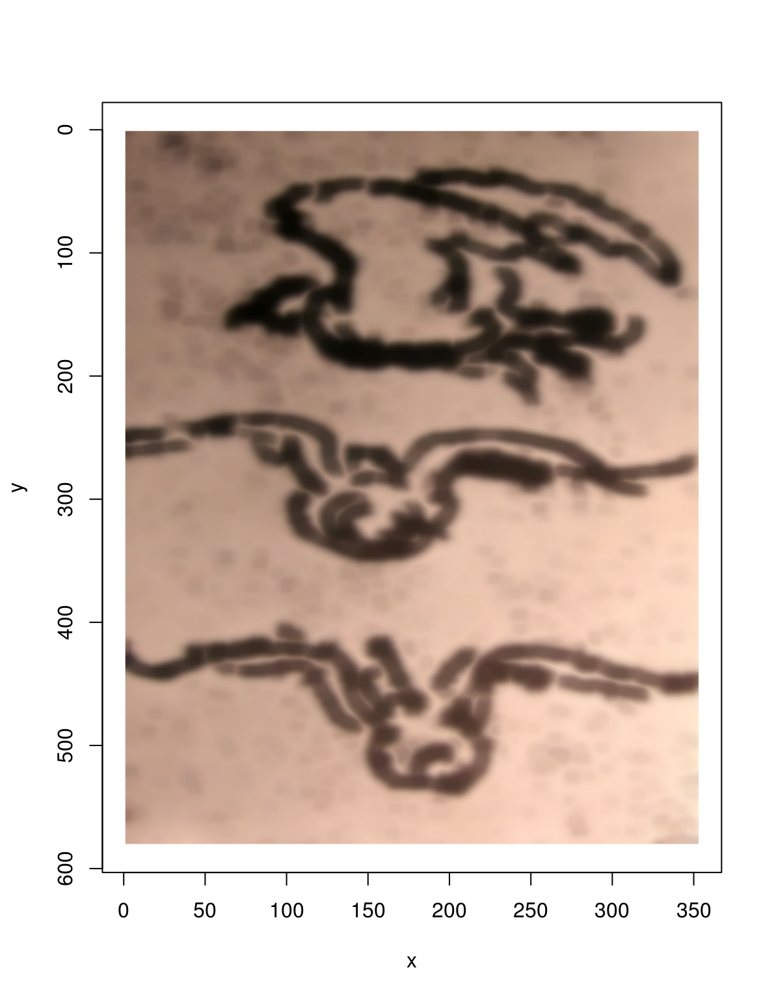

Simon Barthelmé (GIPSA-lab, CNRS)
If R isn’t fast enough for your needs, it may be worth using the CImg C++ API directly. Imager provides some wrappers that makes the process relatively convenient (if anything involving C++ can ever be called convenient).
Here’s a basic example: we define a C++ function inline, call cppFunction, and the function becomes magically accessible.
library(imager)
#Some C++ code as a character string
#The function takes an image, applies blur and erode operations, and returns the result
foo.inline <- "
NumericVector foo(NumericVector inp)
{
CImg<double> img = as<CImg<double> >(inp);
img.blur(3).erode(4);
return wrap(img);
} "
#Compile the function. The compiler may issue a number of warnings which you cann all ignore
cppFunction(foo.inline,depends="imager")
im <- load.image(system.file('extdata/Leonardo_Birds.jpg',package='imager'))
#Function foo is now accessible
foo(im) %>% plot
Going through the C++ code in more detail:
NumericVector foo(NumericVector inp)cimg objects are passed from R to C++ as vectors of doubles with a dimension attribute of length 4 (corresponding to the x,y,z,c axes). We use the NumericVector class defined by Rcpp for that purpose.
CImg<double> img = as<CImg<double> >(inp);Cimg is a templated library, and here we instantiate a CImg object (representing an image) with type double. The as function handles the conversion from NumericVector to CImg
img.blur(3).erode(4);This is a straightforward call to the CImg API, using chaining syntax. Note that operations are done in-place.
return wrap(img);Use a custom wrap function that takes a CImg object and turns into into a NumericVector object with the right attributes. The result will show up in R as a cimg object.